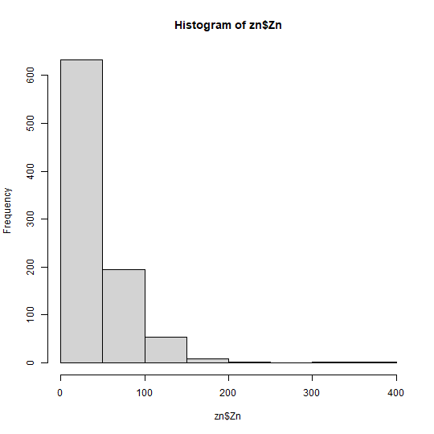
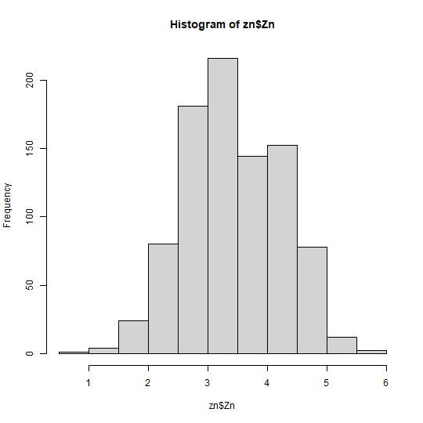
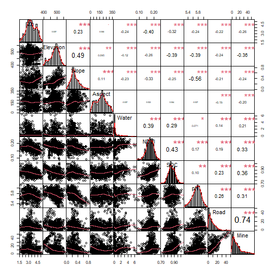

Geographically Optimal Similarity (GOS) and the Third Law of Geography in R
Source:vignettes/geosimilarity.Rmd
geosimilarity.Rmd
Citation for package geosimilarity
To cite geosimilarity R package in
publications, please use:
Song, Y. (2022) “Geographically Optimal Similarity”, Mathematical Geosciences. doi: 10.1007/s11004-022-10036-8.
1. Introduction to geosimilarity package
The package can be used to address following issues:
Geographically optimal similarity (GOS) modeling.
Modeling the Third Law of Geography (i.e., basic configuration similarity (BCS) model).
Spatial prediction.
More details of GOS models can be found in Song (2022).
2. Spatial prediction using GOS model
According to Song (2022), GOS
model consists of four primary steps: (1) Characterizing geographical
configurations, (2) determining parameters for the optimal similarity,
(3) spatial prediction using GOS and uncertainty assessment, and (4)
model evaluation. The process of using geosimilarity
package to conduct GOS modeling is presented as follows.
2.1 Characterizing geographical configurations
The geosimilarity package contains two spatial
datasets:
zn: Spatial samples of Zn concentrations and explanatory variables at sample locationsgrid: Spatial grid data of explanatory variables used for the prediction
install.packages("geosimilarity", dependencies = TRUE)
# or run the following code:
install.packages("geosimilarity", dep = TRUE)
library(geosimilarity)
data("zn")
head(zn)
## # A tibble: 6 × 12
## Lon Lat Zn Elevation Slope Aspect Water NDVI SOC pH Road Mine
## <dbl> <dbl> <dbl> <dbl> <dbl> <dbl> <dbl> <dbl> <dbl> <dbl> <dbl> <dbl>
## 1 120. -28.5 10 455. 0.236 306. 0.014 0.184 0.909 5.95 49.4 55.6
## 2 120. -28.4 30 451. 0.207 293. 2.20 0.202 0.906 6.05 49.0 51.1
## 3 120. -28.4 30 443. 0.285 325. 0.0119 0.163 0.848 5.76 45.1 45.0
## 4 120. -27.4 30 509. 0.236 98.4 3.06 0.204 0.851 5.82 0.0774 49.0
## 5 120. -28.3 33 427. 0.191 329. 3.53 0.179 0.933 5.85 39.9 39.8
## 6 120. -27.3 27 510. 0.211 105. 3.38 0.191 0.868 6.07 0.0468 48.7Data pre-processing and variable selection:
# log-transformation
hist(zn$Zn)

# remove outliers
k <- removeoutlier(zn$Zn, coef = 2.5)
## Remove 9 outlier(s)
dt <- zn[-k,]
# correlation
library("PerformanceAnalytics")
## Loading required package: xts
## Loading required package: zoo
##
## Attaching package: 'zoo'
## The following objects are masked from 'package:base':
##
## as.Date, as.Date.numeric
##
## Attaching package: 'PerformanceAnalytics'
## The following object is masked from 'package:graphics':
##
## legend
cor_dt <- dt[, c(3:12)]
chart.Correlation(cor_dt, histogram = TRUE, pch = 19)
# multicollinearity
library(car)
## Loading required package: carData
m1 <- lm(Zn ~ Slope + Water + NDVI + SOC + pH + Road + Mine, data = dt)
car::vif(m1)
## Slope Water NDVI SOC pH Road Mine
## 1.651039 1.232454 1.459539 1.355824 1.568347 2.273387 2.608347In this step, the selected variables include Slope, Water, NDVI, SOC, pH, Road, and Mine.
2.2 Determining the optimal similarity
In the gos_bestkappa() function, if you set more
optional numbers to the kappa vector and a higher value of
the cross-validation repeat times nrepeat, a \(\kappa\) value enabling more accurate
prediction will be selected, but the computation time will be increased.
You can specify the cores parameter to use multiple CPU
cores for parallel computing.
The default ratio of train set to test set in
gos_bestkappa() is 1:1(0.5). You
can specify the ratio of train set to test set by nsplit
parameter
system.time({
b1 <- gos_bestkappa(Zn ~ Slope + Water + NDVI + SOC + pH + Road + Mine,
data = dt,
kappa = c(0.01, 0.05, 0.1, 0.2, 0.5, 1),
nrepeat = 2,
cores = 1)
})
## user system elapsed
## 3.67 0.06 4.74
b1$bestkappa
## [1] 0.1
b1$cvmean
## # A tibble: 6 × 2
## kappa rmse
## <dbl> <dbl>
## 1 0.01 0.681
## 2 0.05 0.663
## 3 0.1 0.659
## 4 0.2 0.661
## 5 0.5 0.664
## 6 1 0.665
system.time({
b2 <- gos_bestkappa(Zn ~ Slope + Water + NDVI + SOC + pH + Road + Mine,
data = dt,
kappa = c(seq(0.01, 0.1, 0.01), seq(0.2, 1, 0.1)),
nrepeat = 10,
cores = 6)
})
## user system elapsed
## 0.01 0.02 17.05
b2$bestkappa
## [1] 0.08
b2$cvmean
## # A tibble: 19 × 2
## kappa rmse
## <dbl> <dbl>
## 1 0.01 0.694
## 2 0.02 0.680
## 3 0.03 0.674
## 4 0.04 0.672
## 5 0.05 0.669
## 6 0.06 0.667
## 7 0.07 0.667
## 8 0.08 0.667
## 9 0.09 0.667
## 10 0.1 0.667
## 11 0.2 0.669
## 12 0.3 0.671
## 13 0.4 0.672
## 14 0.5 0.672
## 15 0.6 0.673
## 16 0.7 0.673
## 17 0.8 0.673
## 18 0.9 0.673
## 19 1 0.673
library(cowplot)
plot_grid(b1$plot,b2$plot,nrow = 1,label_fontfamily = 'serif',
labels = paste0('(',letters[1:2],')'),
label_fontface = 'plain',label_size = 10,
hjust = -1.5,align = 'hv')kappa
is (0.01, 0.05, 0.1, 0.2, 0.5, 1) and nrepeat is 2. (b) The
optional kappa is (0.01, 0.02, …, 0.09, 0.1, 0.2, …, 1) and
nrepeat is 10.2.3 Spatial prediction
system.time({
g2 <- gos(Zn ~ Slope + Water + NDVI + SOC + pH + Road + Mine,
data = dt, newdata = grid, kappa = 0.08, cores = 6)
})
## user system elapsed
## 0.03 0.00 5.86
grid$pred <- exp(g2$pred)
grid$uc99 <- g2$`uncertainty99`
library(ggplot2)
library(viridis)
## Loading required package: viridisLite
f1 = ggplot(grid, aes(x = Lon, y = Lat, fill = pred)) +
geom_tile() +
scale_fill_viridis(option="magma", direction = -1) +
coord_equal() +
labs(fill='Prediction') +
theme_bw()
f2 = ggplot(grid, aes(x = Lon, y = Lat, fill = uc99)) +
geom_tile() +
scale_fill_viridis(option="mako", direction = -1) +
coord_equal() +
labs(fill=bquote(Uncertainty~(zeta==0.99))) +
theme_bw()
plot_grid(f1,f2,nrow = 1,label_fontfamily = 'serif',
labels = paste0('(',letters[1:2],')'),
label_fontface = 'plain',label_size = 10,
hjust = -1.5,align = 'hv')In addition, the following codes can be used to plot uncertainty under different \(\zeta\) values.
uc <- g2 %>%
dplyr::select(dplyr::starts_with("uncertainty")) %>%
dplyr::bind_cols(grid[,2:3],.) %>%
tidyr::pivot_longer(cols = -c(1,2),
names_to = "uncertainty",
values_to = "value")
ggplot(uc, aes(x = Lon, y = Lat, fill = value)) +
geom_tile() +
scale_fill_viridis(option="mako", direction = -1) +
coord_equal() +
facet_wrap(~ uncertainty) +
labs(fill='Uncertainty') +
theme_bw()2.4 Model evaluation
We can compare model accuracy of GOS with various models, such as kriging, multivariate regression, regression kriging, random forest, BCS, etc., as shown in Song (2022). Here is a simple example of comparing modeling accuracy between BCS and GOS.
set.seed(99)
# split data for validation: 50% training; 50% testing
split <- sample(1:nrow(dt), round(nrow(dt)*0.5))
train <- dt[split,]
test <- dt[-split,]
library(DescTools)
##
## Attaching package: 'DescTools'
## The following object is masked from 'package:car':
##
## Recode
# BCS
h1 <- gos(Zn ~ Slope + Water + NDVI + SOC + pH + Road + Mine,
data = train, newdata = test, kappa = 1)
MAE(test$Zn, h1$pred)
## [1] 0.5158373
RMSE(test$Zn, h1$pred)
## [1] 0.6599409
# GOS
h2 <- gos(Zn ~ Slope + Water + NDVI + SOC + pH + Road + Mine,
data = train, newdata = test, kappa = 0.08)
MAE(test$Zn, h2$pred)
## [1] 0.5089462
RMSE(test$Zn, h2$pred)
## [1] 0.6523436As a result, the MAE of BCS is 0.5158 and the MAE of GOS is 0.5089, the RMSE of BCS is 0.6599 and the RMSE of GOS is 0.6523. Compared with BCS, GOS reduced 1.34% of MAE and 1.15% of RMSE.